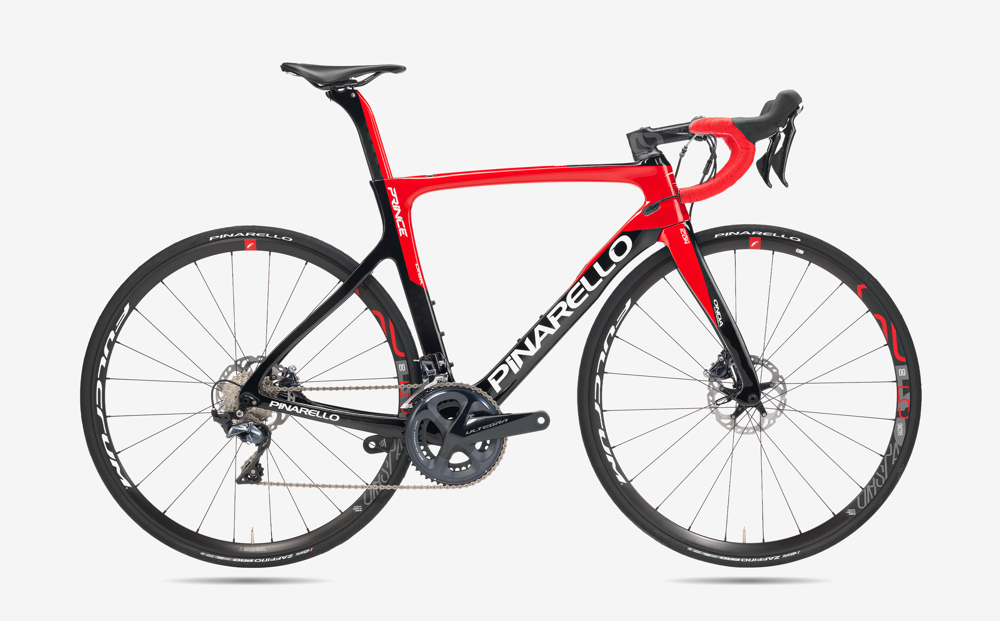

Pinarello — итальянская компания-производитель спортивных велосипедов, базирующаяся в городе Тревизо, Италия. Основанная в 1952 году, компания предлагает в основном велосипеды ручной сборки для шоссе, трека, и велокросса. Компания также производила велосипеды под торговой маркой Opera, а сейчас имеет собственный бренд компонентов и аксессуаров — MOST. В декабре 2016 года компания была приобретена частной инвестиционной группой L Catterton, связанной с LVMH Moët Hennessy Louis Vuitton SE, также известной как LVMH.
Джованни Пинарелло — основатель компании, родился 10 июля 1922 года в коммуне Виллорба, Италия. Он был восьмым ребенком из двенадцати и жил в обычной фермерской семье. С детства Джованни стал увлекаться велосипедами и к 17 годам начал участвовать в соревнованиях в любительской категории. Одновременно с этим он начинает подрабатывать в местной компании Paglianti. Тут, вместе со своими сотрудниками, он начинает производить велосипеды ручной сборки. Велосипедные рамы были грубыми и скупались не очень активно, к тому же компания не могла выпускать большие партии, что тормозило её развитие. К 1947 году Джованни переходит в профессиональный спорт, где в течение шести лет побеждает в пяти гонках и заканчивает карьеру в 1953 году. В 1952 году Джованни переезжает в Тревизо, где берет в аренду магазин и начинает коммерческую деятельность. Деньги на аренду он получил от профессиональной команды Bottecchia, в которой он тогда состоял и получил от неё 100 000 лир. Постепенно бренд Pinarello приобретает репутацию и к 1957 году начинается сотрудничество с первой командой Padovani. Сотрудничество с профессиональным командами становится для Джованни главным рекламным двигателем.
Постепенно компания переходит из небольшой мастерской в крупную компанию с полным циклом работ, включая монтаж и окраску, в которой работают десятки сотрудников. В 1960 году Pinarello начинает спонсировать профессиональную команду Mainetti. В 1966 году на велосипеде Pinarello Гуидо Россо побеждает в многодневной гонке Тур де л'Авенир. А в 1975 году, Фаусто Бертольо побеждает на крупном Гранд-Туре, Джиро д'Италия. После этого о велосипедах Pinarello начинают говорить в газетах и по телевидению. Бренд становится известным за границей.[1][2] В 1980 году Pinarello подписывает контракт с командой Joly, после чего становится вторым спонсором, после компании Inoxpran. 1984 год стал для Pinarello успешным — американец Алекс Гриваль выигравает золотую медаль на олимпийских играх в Лос-Анджелесе. В начале 90-х годов компания начинает сотрудничать с испанским гонщиком Мигелем Индурайном. На велосипедах Pinarello он одерживает пять побед на Тур де Франс, две победы на Джиро, Олимпиаде, побеждает в гонке с раздельным стартом на чемпионате мира, побивает часовой рекорд. Успехи Индурайна способствовали развитию бренда Pinarello в Испании. Она становится главным экспортером компании.
В 2009 году компания Pinarello становится одним из главных спонсоров образованной в этом же году команды Team Sky (с 2019 года – Team Ineos). На велосипеде Pinarello Dogma Брэдли Виггинс одерживает победу в гонке Тур де Франс. В 2013, 2015–2019 годах Pinarello Dogma ежегодно фигурирует в качестве велосипедов победителей этой престижнейшей велогонки из команды Team Sky. Также велосипеды Pinarello позволили победить Team Sky в гонках Giro d'Italia и Vuelta a España. 2000-е годы ознаменовались для Pinarello переходом к асимметричной геометрии рамы, экспериментами с формой вилки и широким использованием электронно управляемых трансмиссий. Последние модели шоссейных велосипедов Pinarello имеют характерную, выгнутую вперед, форму вилки, заимствованную у модели IL Bolide (показавшую хорошую аэродинамичность).
Разработка рам проходит на фабрике в Тревизо. Затем эскизы отправляют на фабрику компании в Тайвань, где рамы производятся. После чего рамы отправляются в Италию, где их обрабатывают и красят (всё делается вручную). Ежегодно Cicli Pinarello S.p.A. производит свыше 30000 велосипедов и 7000 рам под брендом Pinarello. 70 % продукции производится на экспорт (в основном для Японии, США, Австралии и Испании).[3] Компания производит велосипеды преимущественно ручной сборки. Материалы рамы: карбон, алюминий.
Pinarello сотрудничает с японской фирмой Toray — это единственная компания которая поставляет ей карбон, поставляемый также для аэрокосмической промышленности. Также компания сотрудничает с такими фирмами как Sram, Campagnolo, Shimano.
| CC | CF | L | I | A[0] | B[0] | F | P | T | D | R | G | REACH | STACK |
| 425 | 440 | 500 | 117 | 74 | 70 | 563 | 408 | 115 | 67 | 50 | 367 | 348 | 504 |
| 460 | 475 | 512 | 127 | 74 | 71 | 570 | 408 | 130 | 67 | 50 | 367 | 358 | 522 |
| 490 | 505 | 528 | 139 | 73.5 | 72 | 575 | 408 | 145 | 72 | 50 | 367 | 365 | 544 |
| 510 | 525 | 545 | 149 | 73 | 72 | 588 | 408 | 155 | 72 | 50 | 367 | 374 | 554 |